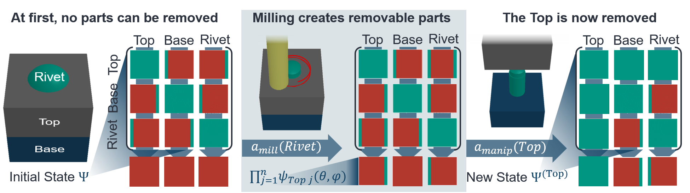
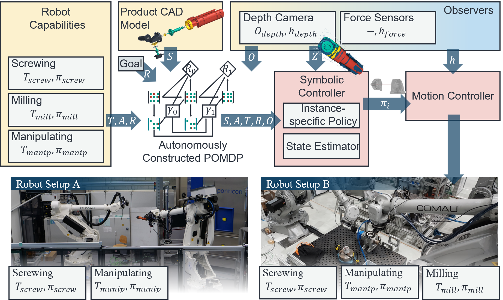
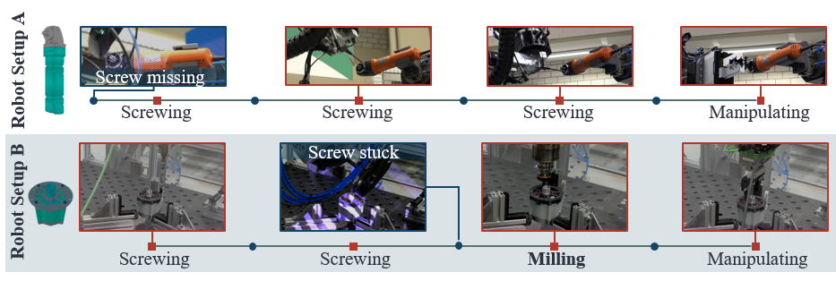

Abstract
To support the circular economy, robotic systems must not only assemble new products but also disassemble end-of-life (EOL) ones for reuse, recycling, or safe disposal. Existing approaches to disassembly sequence planning often assume deterministic and fully observable product models, yet real EOL products frequently deviate from their initial designs due to wear, corrosion, or undocumented repairs. We argue that disassembly should therefore be formulated as a Partially Observable Markov Decision Process (POMDP), which naturally captures uncertainty about the product's internal state. We present a mathematical formulation of disassembly as a POMDP, in which hidden variables represent uncertain structural or physical properties. Building on this formulation, we propose a task and motion planning framework that automatically derives specific POMDP models from CAD data, robot capabilities, and inspection results. To obtain tractable policies, we approximate this formulation with a reinforcement-learning approach that operates on stochastic action outcomes informed by inspection priors, while a Bayesian filter continuously maintains beliefs over latent EOL conditions during execution. Using three products on two robotic systems, we demonstrate that this probabilistic planning framework outperforms deterministic baselines in terms of average disassembly time and variance, generalizes across different robot setups, and successfully adapts to deviations from the CAD model, such as missing or stuck parts.
Disassembly Planning as a POMDP
We model disassembly planning as a Partially Observable Markov Decision Process (POMDP) that is automatically constructed from CAD data. The product state represents how parts can be separated, using directional disassembly relations between part pairs. Unlike prior binary representations, these relations are interpreted probabilistically, allowing uncertainty about whether parts are actually movable. EOL conditions are modeled as hidden operations of the nominal CAD-derived structure, modifying disassembly relations.
The action space comprises discrete part-removal actions, executed either non-destructively or destructively, with one action per part and tool. Including destructive actions is essential for end-of-life disassembly, as EOL conditions such as corrosion can block all normal removal paths. Destructive actions modify the product structure itself by creating new feasible disassembly directions, ensuring progress when non-destructive actions fail, as seen with the following rivet example:

Results for a sample Implementation
Based on the general POMDP formulation, we implement a task and motion planning framework that automatically derives specific POMDP models from CAD data, robot capabilities, and inspection results. This system is evaluated on three different products using two distinct robotic setups. The system architecture of the implementation is shown below:

The results show that POMDB-based planning is more robust in the face of end-of-life conditions, such as corrosion or missing parts. It can adapt to these changes on the fly, as shown below. The paper also shows that the system outperforms deterministic baselines in terms of average disassembly time and variance.

BibTeX
@misc{baumgärtner2025cadpomdpprobabilisticplanning,
title={From CAD to POMDP: Probabilistic Planning for Robotic Disassembly of End-of-Life Products},
author={Jan Baumgärtner and Malte Hansjosten and David Hald and Adrian Hauptmannl and Alexander Puchta and Jürgen Fleischer},
year={2025},
eprint={2511.23407},
archivePrefix={arXiv},
primaryClass={cs.RO},
url={https://arxiv.org/abs/2511.23407},
}